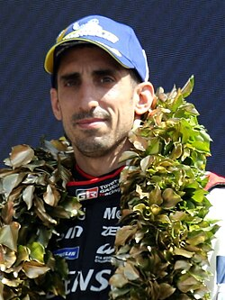
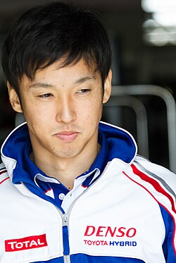

What is endurance racing?
Endurance racing is a type of racing where cars go around a designated track, instead of a set let time it is base of how much distance is covered during the time.
What is WEC Series?
WEC Endurance racing series where the cars are regulated in each division.
Formula Series
-
F1
This is where the top drivers in Formula compete with the fastest cars.
-
F2
This is a secondary development series aiming to develop younger drivers.
-
F3
This is a third division focusing on developing young drivers.
-
F4
This is a fourth division where younger drivers participate.
-
Fernando Alonso
With 5 wins, he holds is tied with the most wins.
-
Sébastien Buemi
With 5 wins, he is tied on the list of most wins.
 -
Kazuki Nakajima
With 5 wins, he is tied on the lis for the most wins.
